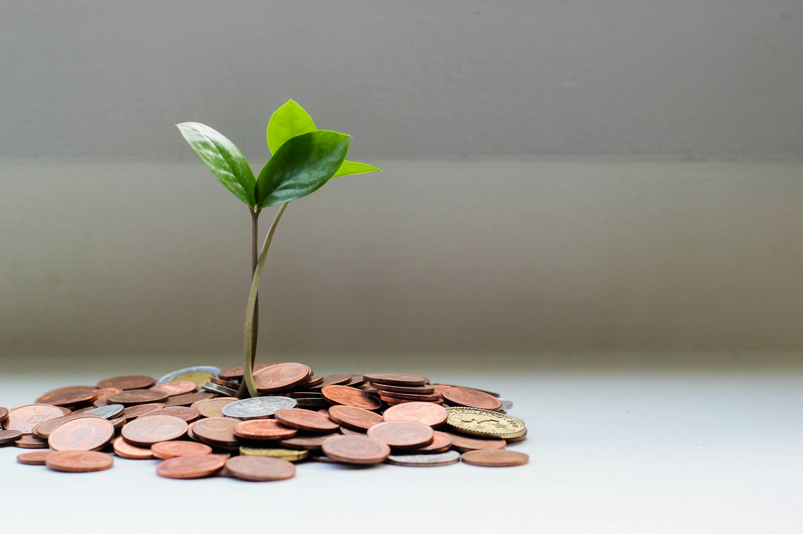

O agronegócio brasileiro se consolida como um dos principais pilares da economia nacional, combinando um quarto do PIB, vasta produção de alimentos e forte presença no comércio exterior. Em 2025, o setor alcançou níveis recordes em produção e exportação, impulsionado por tecnologia e inovação, ao mesmo tempo em que enfrenta desafios sociais e ambientais que demandam soluções sustentáveis.
Economia e PIB
O agronegócio brasileiro assumiu papel estratégico no crescimento econômico. Segundo o Cepea/CNA, o PIB do agronegócio totalizou cerca de R$ 3,20 trilhões em 2025, equivalentes a 25,13% do PIB nacional Essa participação é muito maior do que a fração direta da agropecuária no PIB (6,1% em 2025) , já que o cálculo do agronegócio inclui toda a cadeia – produção primária, insumos, agroindústria e serviços. Em valores absolutos, o valor adicionado bruto da agropecuária foi de R$ 775,3 bilhões em 2025 , reflexo das altas produtividades, especialmente na produção recorde de milho e soja
O desempenho do setor teve forte impacto no PIB nacional: em 2025 o PIB brasileiro cresceu 2,3% frente a 2024, puxado principalmente pela agropecuária (crescimento de 11,7% no setor) Dados do IBGE mostram que a expansão da agropecuária foi liderada por safras recordes – a produção de milho saltou 23,6% e a de soja 14,6% no ano – enquanto a pecuária também contribuiu positivamente. Esses ganhos produtivos, aliados a preços internacionais favoráveis em certas culturas, elevaram a renda agrícola e fortaleceram o setor como base de investimento e inovação no País.

Lavouras monitoradas por tecnologia de precisão no interior do Brasil
Exportações e Balança Comercial
O agronegócio é o principal motor das exportações brasileiras. Em 2025, o setor exportou US$ 169,2 bilhões em produtos agropecuários – um recorde – representando 48,5% do total exportado pelo Brasil naquele ano Esse desempenho resultou em um superávit comercial de cerca de US$ 149,07 bilhões (receitas de exportação menos importação) , evidenciando a robustez da balança agropecuária diante do déficit dos demais setores.
Entre os produtos mais exportados, destacam-se as commodities: a soja em grão liderou as vendas externas, com receitas de US$ 43,5 bilhões em 2025, seguida pela carne bovina (US$ 17,9 bilhões) O milho alcançou exportações de aproximadamente US$ 8,5 bilhões em 2025 , o que coloca o Brasil entre os maiores exportadores mundiais da commodity. Por sua vez, o açúcar (cana-de-açúcar) teve receita de exportação de US$ 14,1 bilhões em 2025 Esses valores confirmam o protagonismo brasileiro em mercados globais de alimentos: o País é atualmente o maior exportador mundial de soja, açúcar, café, suco de laranja e carnes bovina e de frango, além de figura entre os líderes em milho, algodão e carne suína .
Globalmente, o Brasil consolidou-se como o terceiro maior exportador agrícola em 2024, com cerca de US$ 144,4 bilhões embarcados, equivalente a 7% das exportações mundiais do setor Os principais destinos incluem China (33% das exportações agropecuárias brasileiras em 2025) e União Europeia (15%) Essas parcerias ampliadas, junto a contínua abertura de mercados (525 novos mercados nos últimos anos), contribuíram para a diversificação dos produtos exportados e para a resiliência do agronegócio brasileiro frente às oscilações de preços internacionais
Empregos e Desenvolvimento Regional
O agronegócio brasileiro é um grande gerador de empregos diretos e indiretos em todas as regiões. Em 2025, cerca de 28,4 milhões de pessoas trabalhavam no setor (equivalente a 26,3% dos ocupados no País) Esse contingente inclui trabalhadores da agricultura (produção primária), da agroindústria (processamento) e dos agrosserviços (transporte, armazenamento, comércio, etc.), além de atividades vinculadas a insumos agrícolas. Só na produção agrícola atuavam 7,8 milhões de trabalhadores, e na agroindústria outros 4,7 milhões Há ainda um número relevante de produtores de subsistência (4,9 milhões em autoconsumo) que, embora não estejam diretamente no mercado, fazem parte do agronegócio segundo definições especializadas.
"O agronegócio não alimenta apenas o Brasil: ele conecta o país ao mundo, gerando empregos e inovação em larga escala."
— Economista especialista em agronegócio, 2024Inovação e Produtividade
A intensificação tecnológica é um dos grandes trunfos do agronegócio brasileiro. Desde a fundação da Embrapa (1973) até os dias atuais, a pesquisa agropecuária elevou os rendimentos médios das culturas tropicais. Tecnologias como mecanização avançada (colheitadeiras, plantadeiras), uso de sistemas GPS e de sensores (agricultura de precisão) e mais recentemente inteligência artificial e big data aplicada ao campo têm aumentado a produtividade. Os ganhos são evidentes: no ciclo 2024/25 o Brasil bateu recordes de safra em milho, soja e outras culturas, com ganhos de produtividade superiores à média mundial Por exemplo, a combinação de sementes geneticamente melhoradas e práticas de manejo aprimoradas elevou a produção global do setor em mais de 6% em 2025, segundo levantamentos setoriais.